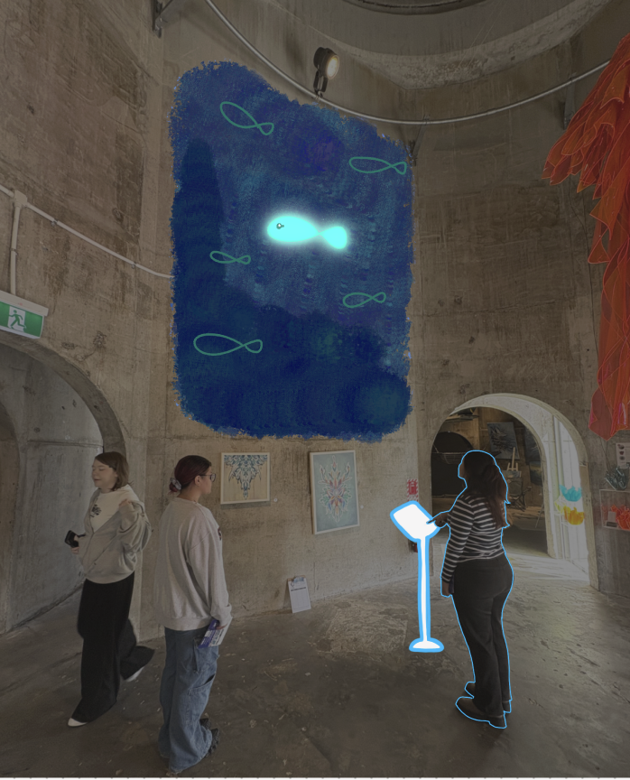
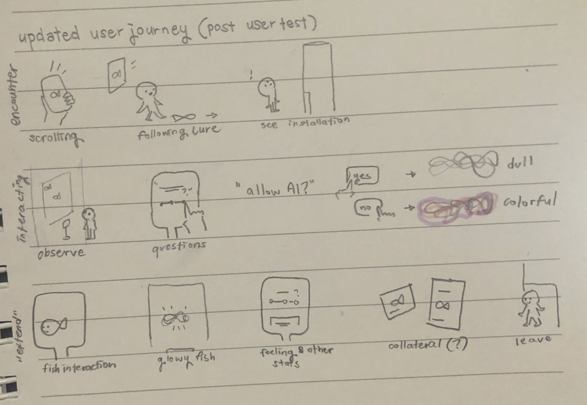
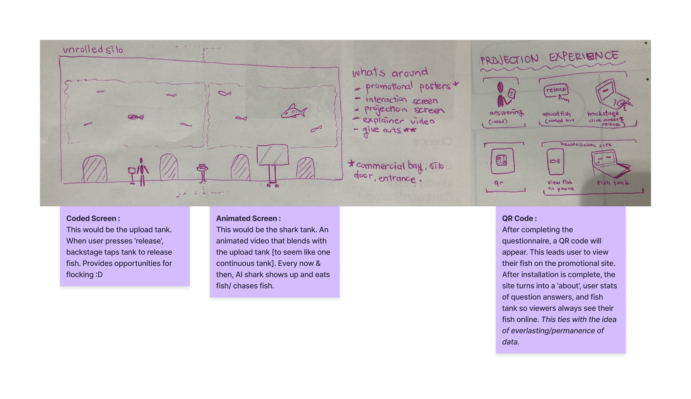
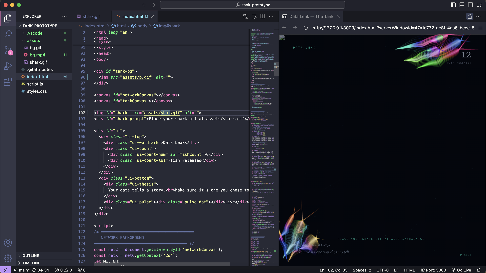
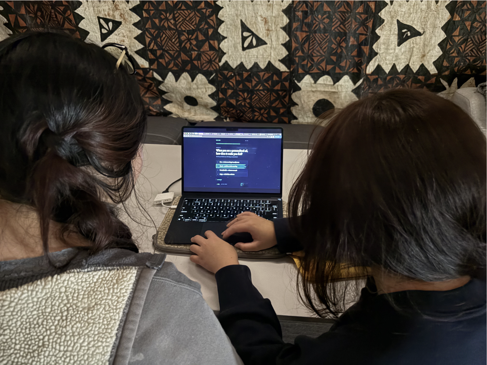
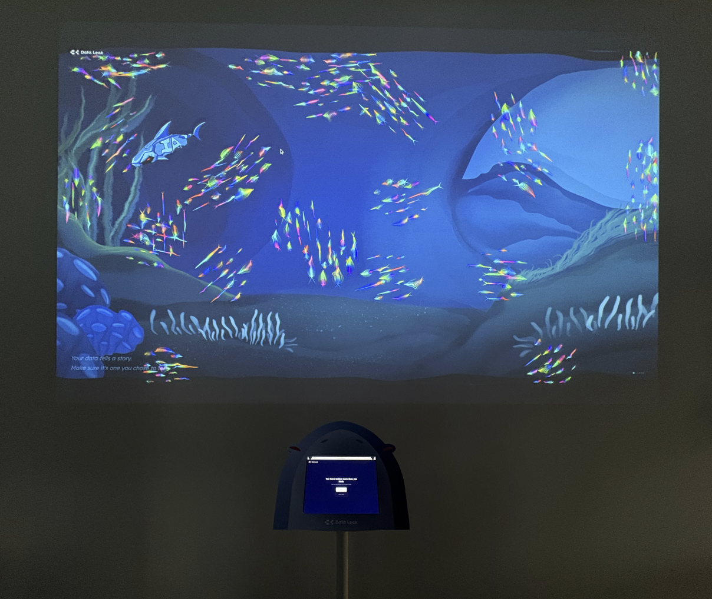

Challenge
Investigate a creative project that explores a context, subject, and medium within the field of media design. This project is self led and experiment based to create a design collateral that answers a research question.
Problem
Explore how people engage with epistolary communication in a digital-first world, and identify opportunities to make the experience feel more approachable and engaging.
Solution
Create a writing experience that helps people ease into personal expression through guidance and interaction.
DISCOVER
Through academic research, a common theme across papers I found was that:
DEFINE
Habits
They likes to write letters but rarely do; usually only for birthdays, goodbyes, or special occasions.
Viewed as very formal and serious.
Structure
Rely on familiar formats when writing letters, providing guidance.
They type a draft before committing to writing.
CLARIFY

Our other interactive designer, Mhayvine, worked on developing the experience and campaign/installation touchpoints.


CONCEPTUALISE

Coding, then using the motion piece to apply to background for the environment

This would be implemented in silo park
OUTCOME
I coded and created the wireframes + the fish and the interaction, in charge of the backend and functions of the experience and then we did a mockup in-situ prototype of the installation interaction.

REFLECTION
This project was a great learning experience for me in terms of working with a team and navigating the challenges that come with it. I learned the importance of communication and collaboration, and how to effectively manage my time and resources to meet project deadlines. I also gained valuable experience in the design process, from research and ideation to prototyping and testing. I loved working with them, and felt so comfortable sharing my ideas and code, and asking for help when I needed it. I also appreciated the opportunity to learn from their expertise in areas like frontend development and design, which helped me grow as a developer and designer. Overall, this project was a great opportunity for me to develop my skills and work with a talented team, and I'm grateful for the experience.